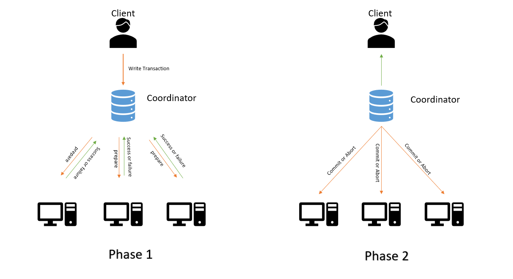
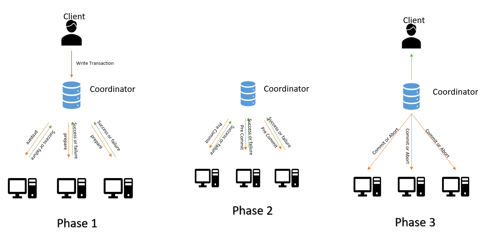

Introduction
A distributed transaction is a coordinated operation that involves multiple systems or databases, ensuring that all individual actions within the transaction either all succeed or all fail together. This atomic commitment is critical for preserving data integrity and consistency across multiple, geographically distributed resources common in modern computing environments.
Because these transactions span different nodes or systems, they must handle challenges such as network failures and partial updates.
What is the need for a Distributed Transaction
The requirement for distributed transactions emerges from the need to maintain data consistency and ensure reliability across multiple independent systems or resources operating within a distributed computing environment. Specially Distributed transactions uphold the ACID properties:
- Atomicity: all parts complete or none do,
- Consistency: data remains valid before and after,
- Isolation: concurrent transactions do not interfere,
- Durability: committed changes survive failures.
Transactions in Monolithic Architecture
In a monolithic architecture, the application is built as a single, unified unit encompassing its database interactions, business logic, and user interface components. Managing transactions in this context is generally simpler because the data and services are centralized within one system.
Example:Consider a basic online e-commerce site built using a monolithic architecture. When a customer places an order, multiple sequential steps are executed within a single unified system:
- The system adds the item to the shopping cart and updates it.
- Payment processing is initiated and completed.
- The order details are recorded in the system.
Transactions in Microservices Architecture
Microservices architecture decomposes an application into smaller, independent services, each managing its own database. This distributed design introduces considerable challenges in preserving transactional integrity across multiple services and separate databases.
Example: Now, imagine transforming the online e-commerce site into a microservices architecture, where the application is divided into distinct services—Inventory Service, Payment Service, and Order Service—each maintaining its own database. When a user places an order, the transaction involves multiple services:
- The Inventory Service verifies and updates the stock levels.
- The Payment Service handles the payment processing.
- The Order Service records the order details.
Types of Distributed Transactions
Distributed transactions coordinate operations across multiple nodes or resources to uphold the ACID properties—Atomicity, Consistency, Isolation, and Durability—ensuring reliable and consistent data management. These transactions make certain that all actions within the process either complete successfully as a whole or fail entirely, maintaining overall system integrity across distributed systems. Common types and protocols used to manage distributed transactions include mechanisms such as two-phase commit and compensating transactions, which help address the complexity of coordinating independent services and databases involved in the transaction. This foundation is especially vital in microservices architectures, where data and processes are decentralized but must remain consistent and reliable despite network and system distribution.
- Two-Phase Commit Protocol (2PC): The Two-Phase Commit Protocol (2PC) is a distributed transaction management technique designed to ensure atomicity across multiple distributed databases or services. It coordinates all participating nodes so that a transaction either commits on all of them or aborts everywhere, maintaining data consistency despite failures or network issues.The protocol operates in two distinct phases:
- Phase One — Prepare Phase:
- The coordinator sends a prepare request to all participating sites.
- Each participant executes the transaction locally up to the point of readiness, writing a "ready to commit" entry in its log if successful, or an "abort" if it cannot commit.
- The participants then reply to the coordinator with either ready or abort.
- Phase Two — Commit/Abort Phase:
- If all participants respond ready, the coordinator decides to commit the transaction.
- The coordinator logs the commit decision and sends a commit message to all participants.
- Participants commit the transaction and log the outcome.

- Phase One — Prepare Phase:
- Three-Phase Commit Protocol (3PC) The Three-Phase Commit (3PC) protocol is an extension of the Two-Phase Commit (2PC) protocol designed to address the blocking problem and improve fault tolerance in distributed transactions by adding an extra phase. While 2PC can cause indefinite blocking if the coordinator fails during the commit phase, 3PC introduces an additional "pre-commit" phase that helps systems avoid this issue and improves overall system availability. How 3PC works:
- Prepare (CanCommit) Phase: The coordinator asks all participants if they are ready to commit, similar to the prepare phase in 2PC. Participants vote yes or no.
- Pre-Commit Phase: If all participants vote yes, the coordinator sends a pre-commit message, and participants acknowledge this. At this point, all participants are guaranteed to have completed the prepare phase and are ready to commit. If any participant fails to receive the pre-commit message within a timeout, the transaction is aborted.
- Commit Phase: After all participants acknowledge the pre-commit, the coordinator sends the commit message. Participants then commit the transaction and notify the coordinator.

- XA transactions : XA transactions are a specific implementation of the Two-Phase Commit (2PC) protocol, designed to ensure atomicity in distributed transactions across various heterogeneous components like databases, message queues, and application servers.
The XA standard outlines a Distributed Transaction Processing (DTP) model involving three key software components:
- Application Program (AP): Defines the boundaries of a transaction and the actions that constitute it .
- Resource Managers (RMs): These are the systems that provide access to shared resources, such as databases or file systems. Many relational databases and message brokers support XA .
- Transaction Manager (TM): Also known as the XA Coordinator, the TM assigns transaction identifiers, monitors their progress, and is responsible for transaction completion and failure recovery. It coordinates the 2PC process.
Implementing Distributed Transactions
Distributed transactions are implemented through the collaboration of several key components and coordination protocols:
- Transaction Managers (TMs): These entities oversee and coordinate transactions spanning multiple resource managers, such as databases or message queues. They ensure that all transactions comply with the ACID properties — Atomicity, Consistency, Isolation, and Durability — even when involving different and distributed resources.
- Resource Managers (RMs): Resource managers handle the specific resources involved in a distributed transaction, including databases or file systems. They work closely with the transaction manager to either prepare for committing changes or perform rollbacks, depending on the TM's directives.
- Coordination Protocols: Distributed transactions leverage coordination protocols like Two-Phase Commit (2PC), Three-Phase Commit (3PC), or consensus algorithms such as Paxos and Raft. These protocols are crucial for achieving agreement among all participants on whether a transaction should be committed or rolled back, thereby maintaining consistency across the system.
Conclusion
Distributed transactions come into play when a transaction spans multiple resources, such as different repositories or database systems. They offer several advantages, including ensuring data consistency, providing strong transaction guarantees, and enhancing the overall performance and scalability of the system. As a result, distributed transactions are widely adopted across various applications to leverage these benefits.